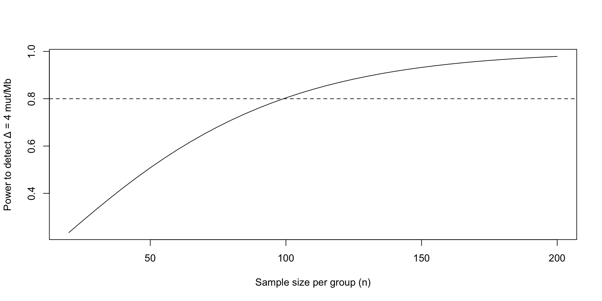
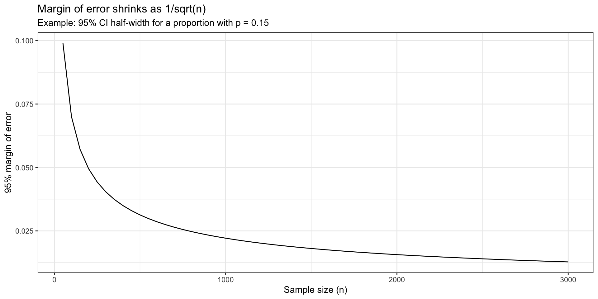
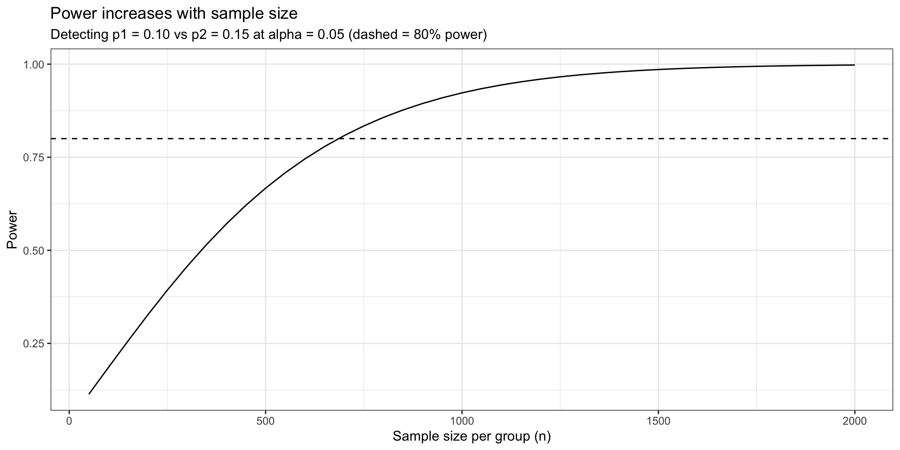

sigma <- 10
ME <- 2
z <- 1.96
n_precision <- (z * sigma / ME)^2
#round up to ensure adequate precision
ceiling(n_precision)[1] 97Sampling distributions
Sampling strategies
Sample size and uncertainty
Precision and statistical power
Key distinction(s):
Review: we rarely observe an entire population [i.e.: all patients, all tumors, all genomes] instead a sample is taken and generalized for statistical analysis
sampling, bias, and sample size determine whether your study’s conclusions are:
A core objective of statistical analysis is to determine:
Does this sample allow the researcher to learn something true about a population?
Three components determine the answer:
Sampling strategy:
Importance in practice:
Examples:
simple Random Sample [SRS]: every set of n units has equal chance of selection
stratified sampling: divide into strata [age, sex, ancestry, site] then sample within strata
cluster/multistage sampling: sample clusters [hospitals/clinics] then sample individuals within clusters
systematic sampling: random start, then every \(k^{th}\) unit from an ordered list
sample size considerations:
structured process used to determine if there is enough data to answer the scientific question reliably, and considers:
sample size is determined by several factors such as:
Small sample size characteristics:
Implications:
Commonly found in:
large sample sizes:
implications:
Data is collected to answer two types of questions:
precision: focuses on estimation accuracyExample:
Estimate the response rate within ±3%
Interpretation:
2)Power: detecting differences between groups
Depends on factors such as:
effect size: smaller effects require larger n
variability: more variability requires larger n
outcome type: binary, continuous, count, survival
Note:
Sample size depends on the inferential goal.
Before computing our sample size (n), consider:
Estimate a population parameter with sufficient precision
Precision increases when:
Note:
Sample size depends on the inferential goal.
Before computing our sample size (n), consider:
Detect a meaningful biological difference with high probability
Power depends on:
Note:
Before collecting data, we must answer:
These are two different goals:
Background:
Research Task: - A colorectal cancer genomics team is deciding whether to invest in deeper sequencing for mismatch-repair testing - The group wants to know whether dMMR tumors have meaningfully higher Tumor Mutational Burden (TMB) than pMMR tumors, using TMB as a quantitative signal of DNA repair deficiency
Why this is a good power calculation example:
Power/Sample Size Questions:
Precision question [determine sample size needed to estimate parameter]:
Power question [determine power to detect signal with sample size]:
How many tumors per group do we need so that we have 80% power to detect it at α = 0.05?
parameter: fixed but unknown population value [i.e.: \(\mu_{dMMR}\)]
statistic: value calculated from the sample [i.e.: \(\bar{x}_{dMMR}\)]
standard error [SE]: variability of a statistic across repeated samples
α: false positive rate
power = 1 − β:
For a mean: \[ SE = \frac{\sigma}{\sqrt{n}} \]
The following determines the sample size needed to estimate a mean given a desired margin of error
margin of error for a confidence interval is:
\[ ME = z \cdot \frac{\sigma}{\sqrt{n}} \]
Determine the following:
Define the variability
Define margin of error
Confidence Level [z-score]:
Sample size formula:
\[ \left(\frac{z \sigma}{ME}\right)^2 \]
sigma <- 10
ME <- 2
z <- 1.96
n_precision <- (z * sigma / ME)^2
#round up to ensure adequate precision
ceiling(n_precision)[1] 97Interpretation:
study needs at least 97 tumors to estimate the mean TMB with a 95% confidence interval whose half-width is ±2 mut/Mb
if the study needs to be repeated study many times the estimated mean TMB would typically fall within 2 mut/Mb of the true population mean
Note:
Increasing sample size reduces uncertainty because
\[ SE = \frac{\sigma}{\sqrt{n}} \]
As \(n\) increases:
sampling distributions describe how a statistic behaves across repeated samples and provide the foundation for statistical inference.
sampling design determines validity
who the sample represents
whether estimates generalize to the population.
sample size determines uncertainty
larger samples → smaller standard errors
narrower confidence intervals
greater statistical power
Precision asks:
How many samples are needed so the confidence interval is narrow enough?
Confidence interval form: [ {Y} z SE ]
Margin of error (ME): [ ME = z ]
Solving for \(n\): [ n = ()^2 ]
Assume:
To calculate sample size, you must specify assumptions. These are not “math details”—they are the scientific commitments that determine feasibility.
For a two-group comparison, the typical inputs are:
You should interpret any final n as “n under these assumptions.”
We will assume prior data suggest:
We will compute: - n for precision - n for power - achieved power under constraints - how n changes when Δ changes
Estimate μ_dMMR (mean TMB among dMMR tumors) with a 95% confidence interval whose half-width is at most ME.
The classical CI form [ {Y} z_{0.975}SE({Y}) ]
where:
So the margin of error is:
[ ME = 1.96 ]
Solving for n:
[ n = ()^2 ]
We choose: - σ = 10 mut/Mb (from prior data) - target ME = 2 mut/Mb (we want estimates within ±2 mut/Mb)
Interpretation of ME in scientific terms: - If ME = 2, then the CI width is about 4 mut/Mb. - That is, we expect our estimate to be “within a few mut/Mb” of the population mean under repeated sampling.
The output is an integer n (after ceiling()), meaning:
What the calculation is doing statistically:
Peck & Olsen emphasize this as a sampling distribution result: - variability of the sample mean shrinks with ().
Detect a difference in mean TMB between dMMR and pMMR tumors.
We define the scientific target as: [ = {dMMR} - {pMMR} = 4 ]
A standard two-sample comparison centers on the standardized effect size:
[ d = ]
Here: - Δ is in mut/Mb (biological units) - σ is in mut/Mb (variability) - d is unitless (signal-to-noise scale)
This “signal over noise” idea is emphasized in Practical Statistics for Data Scientists.
The classic two-sample t-test (as implemented in many power calculators) assumes:
Even when TMB is skewed, with moderate n the mean difference often has an approximately normal sampling distribution (CLT logic).
ISLR’s modeling perspective connects here: - inference relies on approximate normality of estimators (many procedures do).
We use the pwr package.
What it provides: - standard power calculations for common tests (t-test, correlation, ANOVA, etc.) - consistent output objects that report n, power, effect size, and α
How to interpret it: - It returns the sample size required under the specified design and assumptions - It does not validate whether your σ or Δ assumptions are correct—that is your scientific responsibility.
library(pwr)
Delta <- 4
sigma <- 10
effect_size <- Delta / sigma # Cohen's d
pwr_result <- pwr.t.test(d = effect_size,
power = 0.80,
sig.level = 0.05,
type = "two.sample",
alternative = "two.sided")
pwr_result
Two-sample t test power calculation
n = 99.08032
d = 0.4
sig.level = 0.05
power = 0.8
alternative = two.sided
NOTE: n is number in *each* grouppwr.t.test() outputpwr.t.test() prints a structured summary. The key fields are:
Interpretation in this lecture: - If output reports n ≈ 100, that means ~100 tumors per group. - Total analyzable sample size would be ~200 tumors.
Many students misread power output as total n.
For type="two.sample" in pwr.t.test():
This is a design statement: - power depends on the precision of the difference in means, which uses information from both groups.
Now suppose the biology suggests that even Δ = 2 mut/Mb would be important.
Everything else stays the same (σ = 10, α = 0.05, power = 0.80).
New effect size: [ d = = 0.2 ]
This is half the signal, with the same noise.
effect_size_small <- 2 / 10
pwr_small <- pwr.t.test(d = effect_size_small,
power = 0.80,
sig.level = 0.05,
type = "two.sample",
alternative = "two.sided")
pwr_small
Two-sample t test power calculation
n = 393.4057
d = 0.2
sig.level = 0.05
power = 0.8
alternative = two.sided
NOTE: n is number in *each* groupYou should expect n to increase substantially.
Reason (conceptual, from the formulas):
This is one of the most important practical messages in sample size planning: - small, meaningful effects are expensive to detect unless σ is small.
Suppose you can only collect:
Question: - With n fixed, what is the achieved power to detect Δ = 4 mut/Mb?
This is a common real-world workflow: - budget and feasibility fix n - you report the detectable effect size or achieved power.
If the output power is, for example, ~0.55–0.65, interpret it as:
Peck & Olsen’s framing: - A non-significant result in an underpowered study does not strongly support “no effect.” - It often reflects insufficient information.
A power curve shows how power changes as a function of sample size. This is a helpful design communication tool: it makes tradeoffs visible.
ns <- seq(20, 200, by = 5)
power_curve <- sapply(ns, function(n){
pwr.t.test(d = 4/10,
n = n,
sig.level = 0.05,
type = "two.sample",
alternative = "two.sided")$power
})
plot(ns, power_curve, type = "l",
xlab = "Sample size per group (n)",
ylab = "Power to detect Δ = 4 mut/Mb")
abline(h = 0.80, lty = 2)
n the plot:
How this supports decision-making (Practical Statistics perspective):
The pwr calculation gives analyzable n under ideal assumptions.
Real biomedical studies commonly need inflation for:
We focus on the first two here.
If a fraction r of samples are unusable (dropout, assay failure, sequencing QC), then:
\[
n_{enroll} = \frac{n_{required}}{1-r}
\]Example: - required n = 100 per group - expected unusable rate r = 0.10 (10%)
Then: [ n_{enroll} = ]
Interpretation: - you enroll 112 to end with ~100 analyzable tumors.
If observations are grouped (e.g., multiple centers) and within-center outcomes are correlated, independence is violated.A common approximation is the design effect:
\[
DE = 1 + (m-1)\rho
\]where: - (m) = average cluster size (tumors per center) - () = intra-cluster correlation (ICC)
Effective sample size: [ n_{effective} ]
Interpretation: - correlation makes some observations partially redundant - you need more total tumors to achieve the same information as SRS
n_required <- 100 # per group from power calculation
dropout <- 0.10
m <- 20 # avg tumors per center
ICC <- 0.02
DE <- 1 + (m - 1) * ICC
n_enroll <- ceiling((n_required * DE) / (1 - dropout))
list(design_effect = DE,
enroll_per_group = n_enroll,
enroll_total = 2 * n_enroll)$design_effect
[1] 1.38
$enroll_per_group
[1] 154
$enroll_total
[1] 308This output reports:
- **design_effect**: inflation factor due to clusteringKey message: - design and missingness reduce effective information - planning is about achieving target information, not simply raw n
After this module, you should be able to:
1) Identify whether your goal is **precision** or **power**pwr.t.test() to compute n or achieved powerAcross the three books, the shared logic is:
- sampling variability creates uncertaintySample size planning is therefore the quantitative expression of: scientific aims + acceptable risk + realistic data quality/design.
If variability differs across subgroups, stratification can:
- ensure each subgroup is representedExample: two ancestry groups with different biomarker distributions.
#| label: l3-stratified-se6
#| echo: true
set.seed(29)
# population with two strata and different means/variances
pop2 <- tibble(
strata = sample(c("A", "B"), size = N, replace = TRUE, prob = c(0.7, 0.3))
) |>
mutate(biomarker = if_else(strata == "A",
rnorm(N, mean = 10, sd = 2),
rnorm(N, mean = 14, sd = 4)))
true_mean2 <- mean(pop2$biomarker)
srs_once <- function(n){
mean(sample(pop2$biomarker, n, replace = FALSE))
}
strat_once <- function(n){
# proportional allocation (same sampling fractions as population)
nA <- round(n * mean(pop2$strata == "A"))
nB <- n - nA
mean(c(sample(pop2$biomarker[pop2$strata == "A"], nA, replace = FALSE),
sample(pop2$biomarker[pop2$strata == "B"], nB, replace = FALSE)))
}
n <- 200
B <- 2000
srs_est <- replicate(B, srs_once(n))
str_est <- replicate(B, strat_once(n))
tibble(
design = c("SRS", "Stratified (proportional)"),
mean_est = c(mean(srs_est), mean(str_est)),
sd_est = c(sd(srs_est), sd(str_est))
)# A tibble: 2 × 3
design mean_est sd_est
<chr> <dbl> <dbl>
1 SRS 11.2 0.231
2 Stratified (proportional) 11.2 0.196If `sd_est` is smaller for the stratified design, you gained precision **without** increasing $$n$$.That tradeoff matters in practice because:
- sequencing more samples costs moneyFor many estimators, uncertainty is roughly:\[ \text{estimate} \pm z_{0.975}\times SE(\text{estimate}) \]
For a proportion:\[ SE(\hat{p}) \approx \sqrt{\frac{\hat{p}(1-\hat{p})}{n}} \]
So the margin of error shrinks like $$1/\sqrt{n}$$ (slowly). #| label: l3-moe-prop5
#| fig-width: 6
#| fig-height: 4
#| echo: false
p <- 0.15
ns <- seq(50, 3000, by = 50)
moe <- tibble(
n = ns,
se = sqrt(p*(1-p)/n),
moe_95 = 1.96 * se
)
ggplot(moe, aes(x = n, y = moe_95)) +
geom_line() +
labs(
title = "Margin of error shrinks as 1/sqrt(n)",
subtitle = "Example: 95% CI half-width for a proportion with p = 0.15",
x = "Sample size (n)",
y = "95% margin of error"
) +
theme_bw()
Power answers:
> If there is a real effect of a given size, how often will our test detect it?
Power depends on:
- effect size (clinically meaningful difference)Example: detect mutation frequency difference #| label: l3-power-prop9
#| fig-width: 6
#| fig-height: 4
#| echo: false
p1 <- 0.10
p2 <- 0.15
ns <- seq(50, 2000, by = 50)
power_df <- tibble(
n = ns,
power = map_dbl(ns, ~power.prop.test(n = .x, p1 = p1, p2 = p2, sig.level = 0.05)$power)
)
ggplot(power_df, aes(x = n, y = power)) +
geom_line() +
geom_hline(yintercept = 0.8, linetype = "dashed") +
labs(
title = "Power increases with sample size",
subtitle = "Detecting p1 = 0.10 vs p2 = 0.15 at alpha = 0.05 (dashed = 80% power)",
x = "Sample size per group (n)",
y = "Power"
) +
theme_bw()
- **Sampling design defines the repeated-sampling world** your inference lives in.